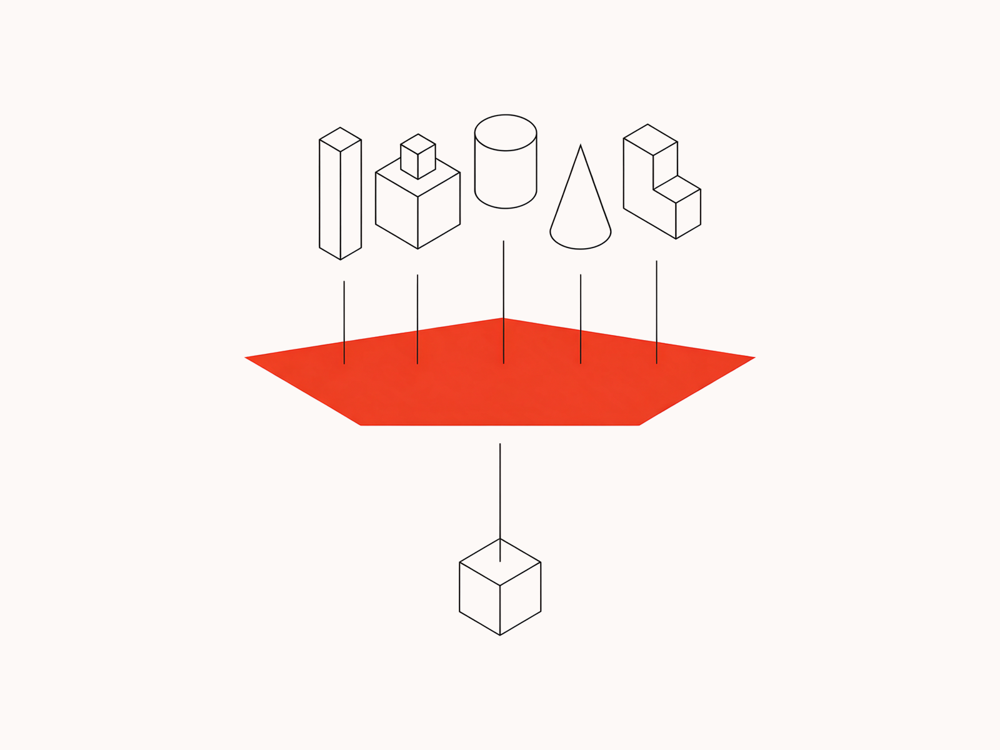
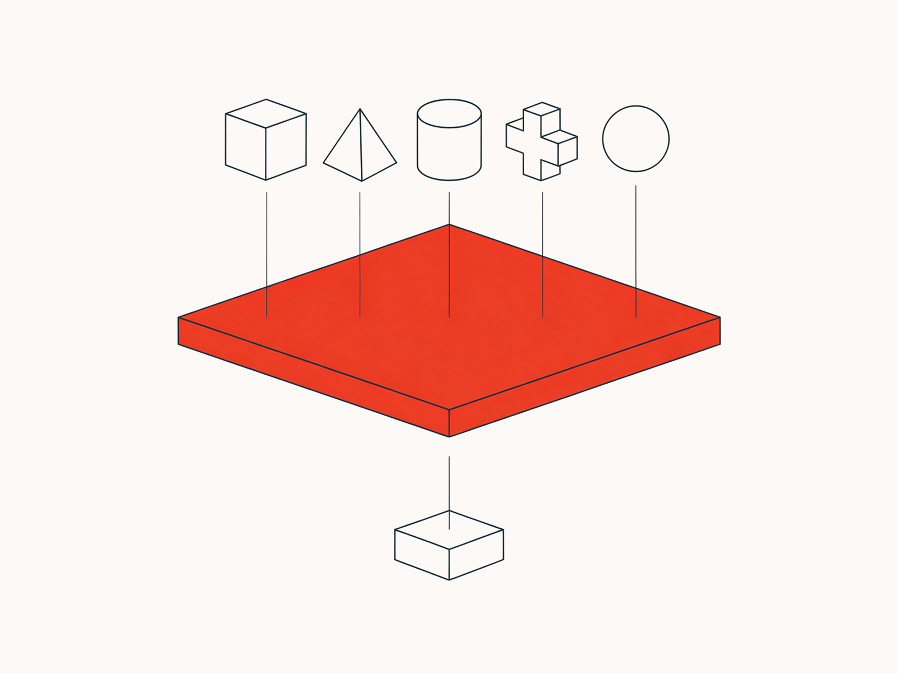
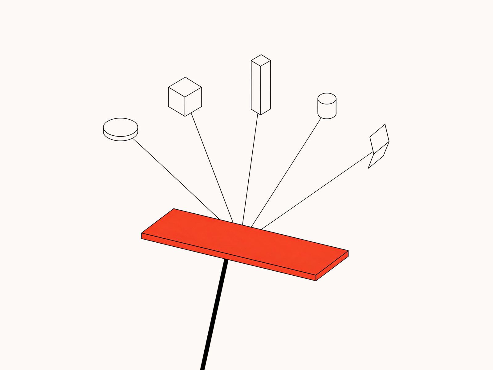
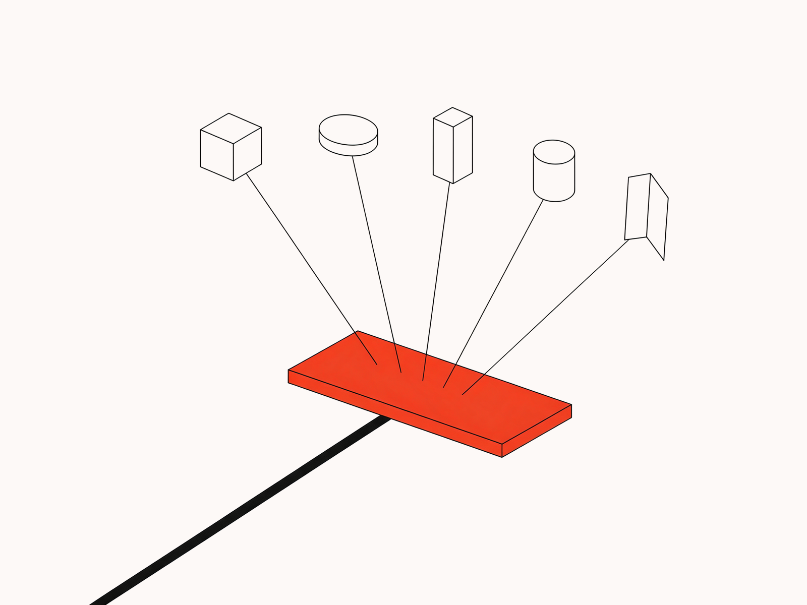
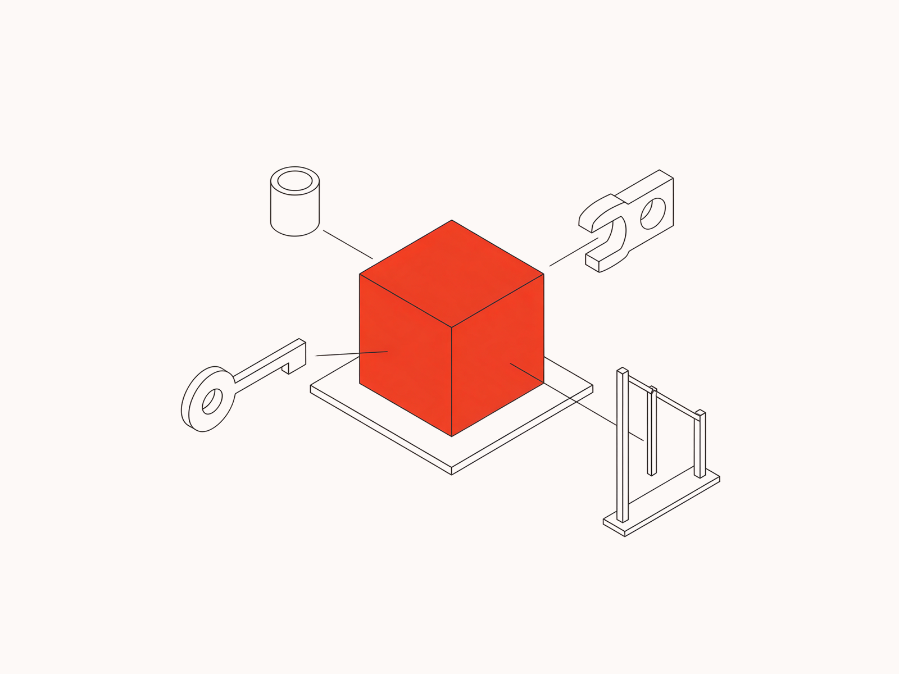
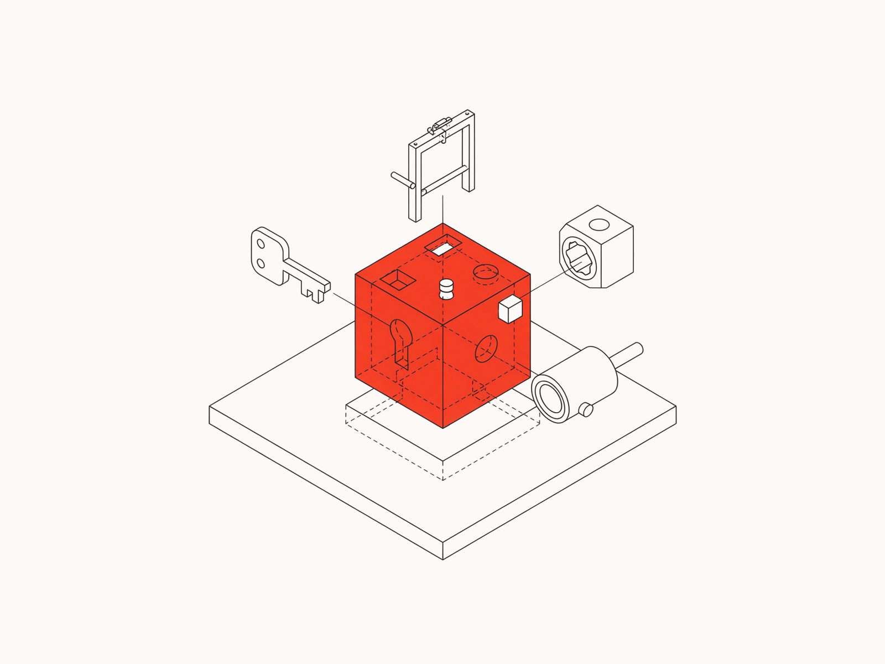
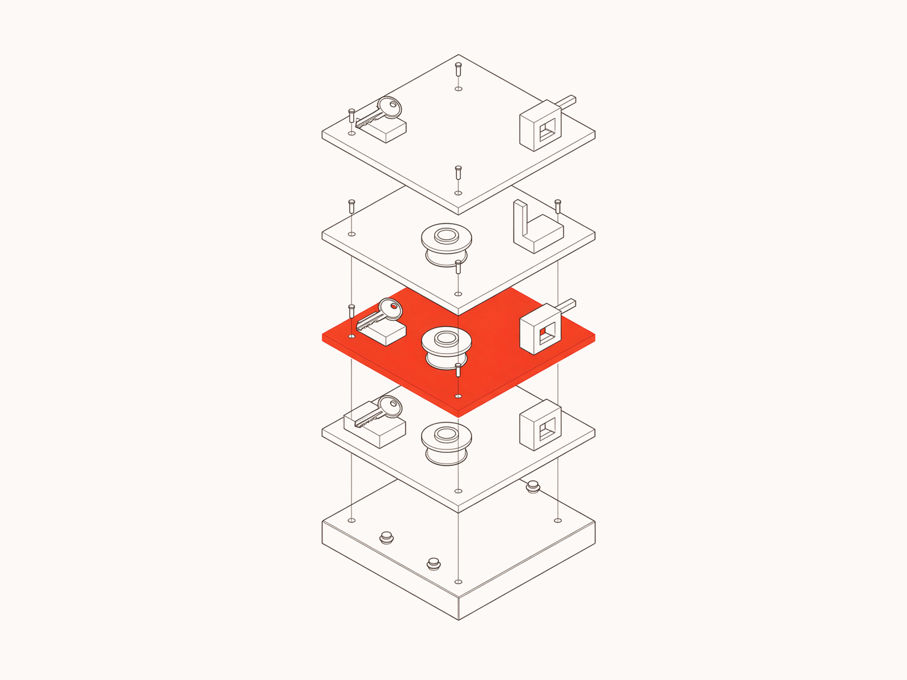
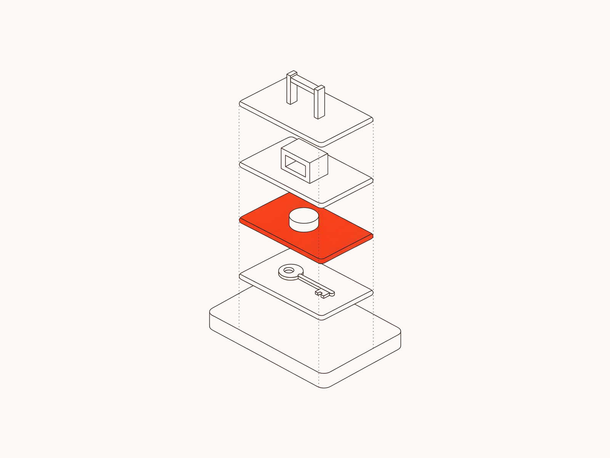

Ничего не поставлено — жду выбора. Кадры в пропорции 4 : 3, как встанут в правой колонке. Бриф клиента на NOVAlab просит здесь больше всего собственной иллюстрации, так что обе секции по нему.
Справа сейчас пусто: текст идёт во всю ширину, правая половина секции пустая. Секция встанет в два столбца — текст слева, кадр справа.
Во всех четырёх соблюдено жёсткое правило клиента: ни одной прямой линии от данных к моделям, всё проходит через слой NOVAlab.




Справа сейчас нарисованная нами панель экрана с придуманным агентом. Бриф просит здесь настоящий скриншот Agent Studio — его у нас нет, поэтому иллюстрация честнее выдуманного интерфейса.
A compliance agent that reviews supplier documents, flags missing certificates and asks a human before rejecting anything.



